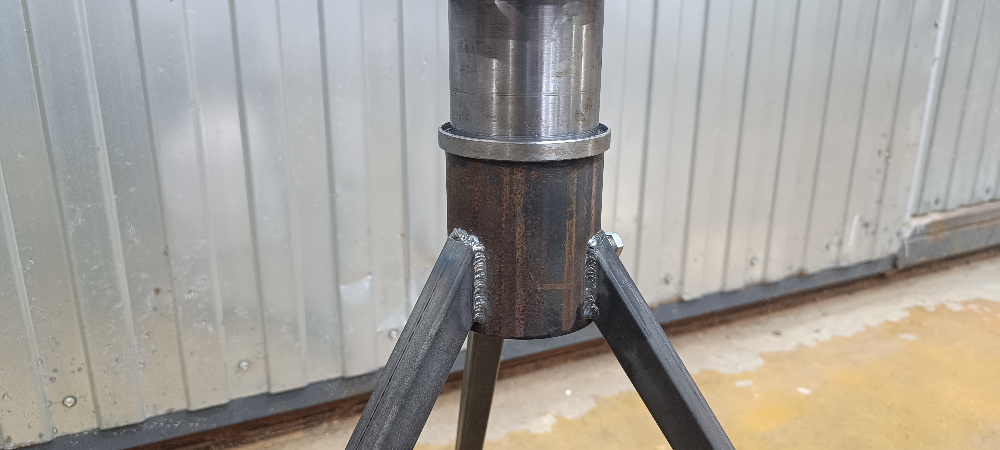
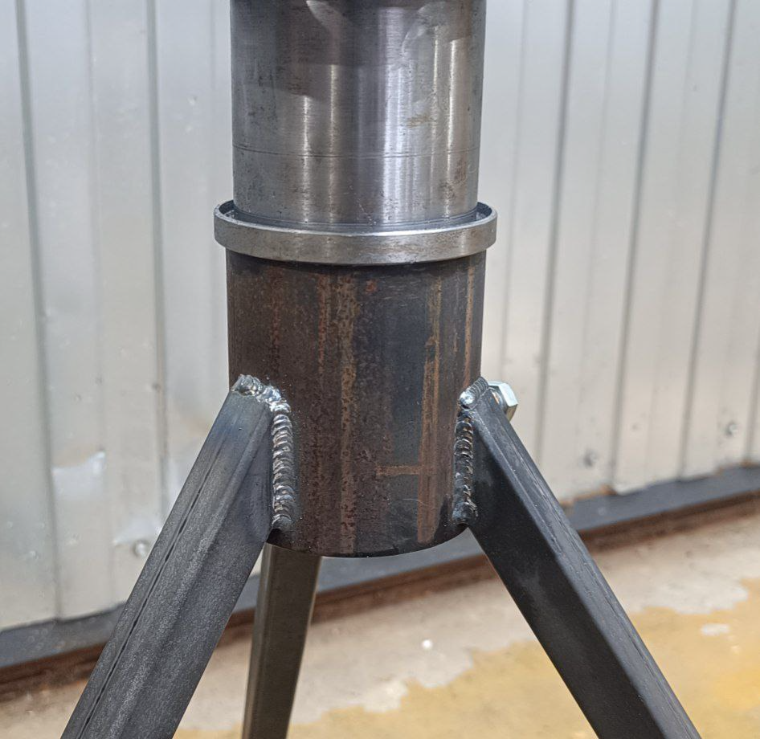
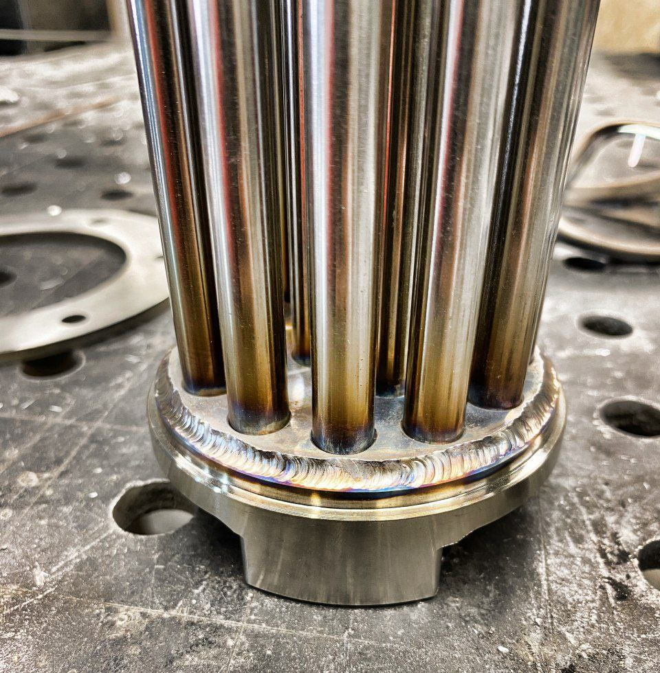
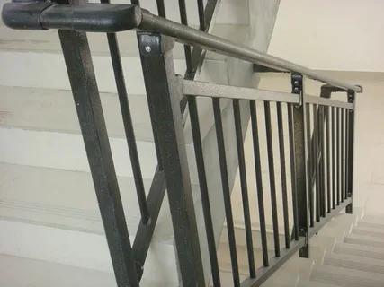
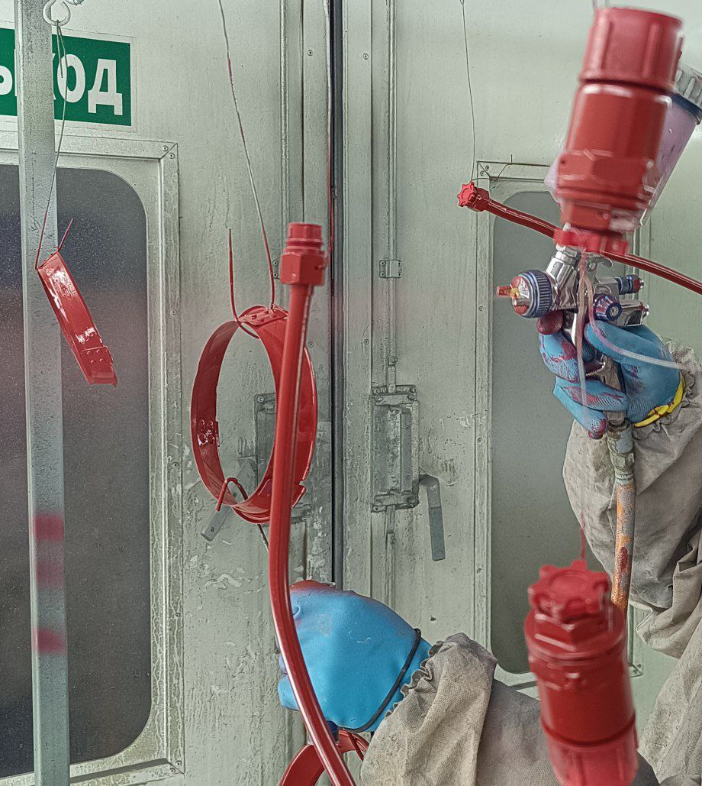
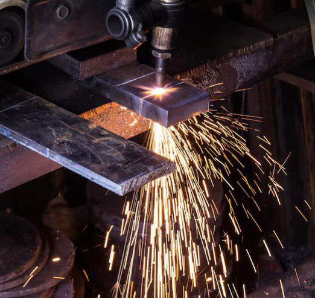
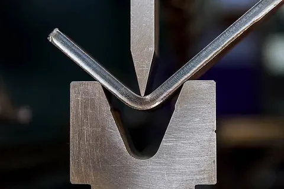

Расточка блоков цилиндров
Профессиональная расточка блоков цилиндров для двигателей:
- Расточка
- Хонингование цилиндров
- Восстановление посадочных мест
- Работа с чугунными и алюминиевыми блоками
Гарантируем точность до 0.01мм и соответствие заводским параметрам.

Ремонт деталей двигателя
Комплексный ремонт и восстановление деталей двигателей и трансмиссии:
- Ремонт ГБЦ (головки блока цилиндров)
- Ремонт шатуна
- Ремонт постели коленвала и распредвала
- Карданный вал (балансировка, ремонт)
- Коллектор (выпускной/впускной)
- Маховик (шлифовка, замена)
- Коленчатый вал (шлифовка, полировка)
- Тормозные и барабанные диски (проточка, восстановление)
Восстанавливаем геометрию и параметры деталей до заводских допусков.

Сварка металлоконструкций
Выполняем сварочные работы любой сложности по чертежам заказчика. Используем современные методы сварки:
- Ручная дуговая сварка (MMA)
- Полуавтоматическая сварка (MIG/MAG)
- Аргонодуговая сварка (TIG)
- Сварка в среде защитных газов
Работаем с черным и цветным металлами, сталепрокатом, трубами, листовым металлом.

Сварка аргоном (TIG)
Высокоточная аргонодуговая сварка для ответственных соединений:
- Сварка нержавеющих сталей
- Сварка алюминия и его сплавов
- Сварка меди и латуни
- Точная сварка тонких материалов
Гарантируем чистый шов без окисления и деформаций.

Сварка перил и ограждений
Изготовление и установка металлических перил для лестниц и балконов:
- Изготовление по индивидуальным проектам
- Сварка с полировкой и финишной обработкой
- Установка на объекте заказчика
- Покраска в цвет по RAL
Создаем безопасные и эстетичные ограждения для любых помещений.

Покраска и антикоррозийная обработка
Обеспечиваем долговечную защиту металлических изделий от коррозии и внешних воздействий:
- Очистка поверхностей (пескоструй, дробеструй)
- Грунтование антикоррозийными составами
- Порошковая покраска
Соблюдаем стандарты ГОСТ и технические условия заказчиков.

Раскрой и резка на ЧПУ
Изготовление деталей с высокой точностью на современном оборудовании:
- Лазерная резка (толщина до 20мм)
- Фрезерование с ЧПУ
- Токарная обработка
Работаем с чертежами в форматах DXF, DWG, STEP, IGES.

Гибка и формовка металла
Производим гибку металлических листов и профилей на специализированном оборудовании:
- Гибка листового металла (до 4м длина, толщина до 20 мм)
- Формовка профилей и труб
- Правка и вытяжка металла
- Изготовление радиусных деталей
Обеспечиваем точность радиуса и углов по техническому заданию.